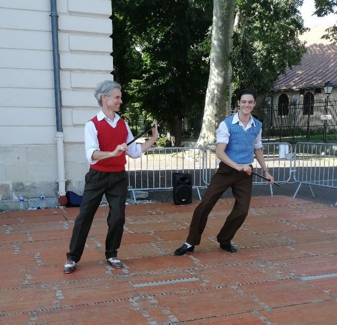

Une association qui fait danser Chilly-Mazarin
Musidanses propose des ateliers de danse et de musique à Chilly-Mazarin, dans l'Essonne : flamenco pour tous les âges, claquettes irlandaises, salsa, danses et chants irlandais. Les ateliers ont lieu à la salle à la Roue, dans le parc de l'hôtel de ville.
L'association participe à la vie locale, par exemple au Forum des associations de la ville.

Notre parcours
À compléter par l'association : année de création, grandes étapes, spectacles marquants. Ce texte se modifie directement dans le fichier association.html.
Ce qui nous anime
La danse sous toutes ses formes
Flamenco, claquettes, salsa, danses irlandaises : plusieurs univers sous le même toit.
La musique aussi
Des ateliers de chants irlandais complètent l'offre de danse.
Convivialité
Des ateliers par niveau, pour les enfants, les ados et les adultes.
Les bénévoles
Les animateurs
Les noms « À renseigner » sont à compléter dans le fichier data/equipe.json.
Envie d'essayer ?
Venez découvrir un atelier. Écrivez-nous pour connaître les modalités de la séance d'essai.
Nous rejoindre Voir les cours